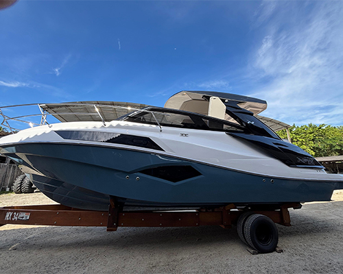
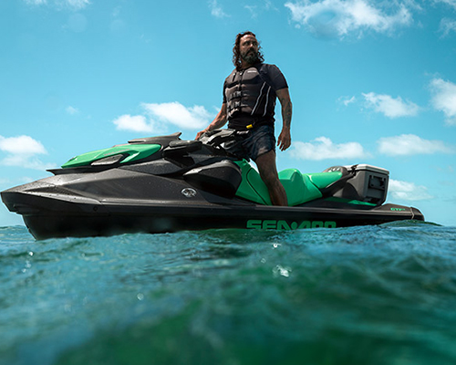
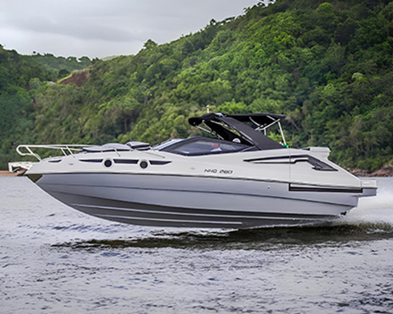

Por que a compra compartilhada funciona?
Assista ao vídeo e entenda porque o sistema de compartilhamento da BOATLUX® é a melhor forma de navegar com inteligência.
Somos a maior empresa de cotas náuticas do país, com mais de 300 embarcações e 2.000 cotistas.
No Litoral Norte Paulista, temos embarcações em Ubatuba, Caraguatatuba, São Sebastião e Ilhabela.
Quero adquirir uma cotaGNU - Grupo Nacional de Utilização
Você tem a possibilidade de utilizar embarcações em qualquer lugar do Brasil com este sistema que você encontra somente na BOATLUX®.
Antes e depois dos passeios são feitos checkups de uso e procedimentos de limpeza nas embarcações.
A BOATLUX® administra toda parte mecânica e estética para conservação do seu bem, incluindo adoçamento no motor, manutenções preventivas e rotinas de check up feitas por nossa equipe.
Locação de vaga e segurança para sua embarcação.



Um sistema de compra compartilhada que proporciona uma relação custo-benefício muito vantajosa aos seus compradores.
Cota Náutica é a propriedade de uma embarcação que torna possível adquirir uma parte do bem para utilizá-lo, ou seja, ao adquirir
uma Cota Náutica se tornará um dos donos da embarcação. Além de investir bem menos na compra, também divide todos
os altos custos mensais com os demais cotistas da sua embarcação, melhorando o custo benefício.
Modelo de compra muito utilizado nos EUA e Europa para aquisição de bens de alto valor, como casas de veraneio, aeronaves, carros de luxo e embarcações. Este modelo se encaixa perfeitamente para embarcações de qualquer tipo e tamanho devido ao custo e usabilidade.
PARA COMPRAR: Pague em torno de 15% do valor da embarcação PARA MANTER: Em até 90% na redução dos custos fixos e de manutenção
USO ILIMITADO: não há limites de uso da embarcação. Ter uma embarcação sozinho exige um custo muito alto, para pouco uso. Compartilhando, o cotista gasta muito menos e usa praticamente como usaria se fosse o único dono. Além de gastar muito menos, não perde tempo e nunca mais tem dor de cabeça para cuidar da sua propriedade. Você é um dono e nós administramos.
Um proprietário individual usa sua emabrcação em torno de 20 vezes ao ano ou em torno de 2 vezes ao mês quando usa muito. Em 365 dias do ano, a embarcação fica ociosa em torno de 95% do tempo, mesmo você pagando 100% de todos os custos financeiros e de tempo.
Essa pergunta é a mais frenquente. Atuamos exclusivamente com compartilhamento de embarcações desde 2012, portanto contamos com um know how exclusivo para embarcações compartilhadas.
Antes de mais nada: Não há limite mínimo ou máximo de uso, seja por mês ou por ano. Exatamente isso, o uso é ILIMITADO.
Um cotista na BOATLUX hoje consegue usar a sua embarcação, na maioria das vezes, mais que um dono individual. Desenvolvemos um sistema online exclusivo com diversas ferramentas para maximizar a utilização. Ao reservar uma data, o cotista se compromete com seus convidados para passear, consequentemente tal organização prévia aumenta o compromisso com o lazer.
Em um grupo de 8 cotas, por exemplo, cada cota consegue utilizar no mínimo 1 vez ao mês em fins de semana¹, podendo chegar à 3 ou 4 vezes. Na maioria dos grupos as reservas em dias úteis são menos frenquentes. A quantidade de cotas que uma pessoa adquire é dimensionada de acordo com a sua necessidade de utilização.
Além disso, a taxa de desistência das reservas pode chegar à 60% dependendo da localidade e estação do ano. Criamos diversas ferramentas que garantem o equilíbrio do sistema, tais como: agendamento online, reserva padrão, suplência, contingência, backup, datas premium, GNU, reconfirmação de reserva e outras.
A utilização da sua embarcação é realizada na localidade onde se encontra. O cotista pega a embarcação na água e entrega no mesmo local ao final do passeio.
Consulte o comercial para mais detalhes.
Desenvolvemos durante todos esses anos um sistema exclusivo BOATLUX que maximiza as possibilidades de uso.
Para este caso, uma das ferramentas utilizadas é a Reserva de Suplência. Trata-se de uma reserva de oportunidade com métricas justas e imparciais.
Em caso de desistência pelo cotista que agendou anteriormente, o primeiro suplente poderá confirmar o passeio. Caso tenha mais de um suplente para esta data, será priorizado o que teve menor uso nos últimos 6 meses.
Assim conseguimos trazer imparcialidade e equilíbrio nesta modalidade de reserva.
Temos uma modalidade que se chama DATAS PREMIUM. Outra ferramente exclusiva para cotistas BOATLUX.
É um sorteio realizado entre os cotistas que possuem interesse em passear nos dias realizado junto à Receita Federal,
tudo feito pelo sistema e sem impactar nas demais reservas.
Para mais informações, consulte o Comercial
Apresento à você a cereja do bolo:
Um dos grandes diferenciais da BOATLUX é o Grupo Nacional de Utilização, o famoso GNU.
Com este sistema todos os cotistas BOATLUX poderão utilizar embarcação em outras regiões pagando
um valor para os cotistas da embarcação utilizada.
Sem dúvidas é mais em conta que alugar uma embarcação.
Entre em contato para maiores informações.
Acreditamos em pactos claros e amizades longas, portanto seremos diretos:
A BOATLUX NÃO TRABALHA COM ALUGUEL DE EMBARCAÇÕES. Essa é a regra de partida que a BOATLUX apresenta para os cotistas ao formar um grupo. Porém, como donos da
embarcação, podem decidir, através de votação por unanimiadade dos cotistas, que a lancha poderá ser alugada ou emprestada para qualquer pessoa.
Caso algum cotista unilateralmente agir de forma contrária ao contrato e alugar a embarcação para terceiros, as penalidades podem ser superiores ao valor da cota,
sem prejuízo às ações de danos morais e materiais cabíveis.
Como já falamos, cada embarcação possui uma regra específica para dependentes e que pode se alterada de acordo com votação pelo grupo de cotistas.
A cota é indivisível. Deixamos expressamente claro que não nos responsabilizamos por acordos particulares entre titular e dependente realizados no
âmbito particular das partes. No caso que permita dependente, este será de livre adição e exclusão pelo titular da cota de acordo com as regras definidas
no ANEXO III - Dependentes.
- Dependente à escolha: Com essa modalidade, o cotista titulat pode eleger 1 (ou mais) dependente à sua escolha que poderá usar a lancha nos dias reservados pela cota.
- Dependentes familiares de primeiro grau: Com essa modalidade os cotistas poderão eleger 1 parente "pai, mãe, filhos ou cônjuge" (um ou mais familiares) para utilização. Varia de acordo com a decisão do grupo de cotistas.
- Sem dependente: Neste caso o cotista, que é o dono da cota, deverá estar presente durante todo o passeio. Antes de adiquirir sua cota, verifique a condição do dependente para a embarcação desejada.
Apenas lanchas com cabines podem pernoitar no mar ou na enseada.
A capacidade de pessoas permitidas pela Marinha do Brasil para pernoitarem na lancha vem descrita no documento.
Importante se informar previamente sobre os cuidados e precauções que devem ser tomadas para que não tenha transtornos.
Essa é uma excelente pergunta. Vamos lá:
Moto Aquática (jet ski): É necessário ter a CHA (Carteira de Habilitação de Amador) com a categoria Motonauta e dentro da validade.
Lancha: Para este tipo de embarcação temos situações diferentes. Vou explicar abaixo: A maioria das lanchas administradas pela BOATLUX®
possuem o Marinheiro à Disposição, ou como chamamos, Assessores de Lazer. Além de pilotar, também é responsável por toda a parte de lazer desde que respeitada a segurança.
Lanchas sem Assessor de Lazer: O cotista deverá ter a CHA na categoria Arrais Amador ou Superior ou contratar externamente um diarista local para passeio.
Lanchas com Acessor de Lazer: Antes de adiquirir sua lancha, verifique a regra da embarcação desejada.
Todo e qualquer custo da embarcação é dividido entre os cotistas, cada cota paga o valor proporcional à sua fração na embarcação.
Além dos valores oriundos da embarcação, cada cota paga uma Taxa de Administração mensal para a BOATLUX cuidar de tudo referente à embarcação e à cota.
"Eu pago se outro cotista danificar a minha embarcação?"
O cotista causador paga 100% do valor referente ao dano causado. A Administradora BOATLUX fará o reparo necessário e cobrará do cotista causador.
Entre em contato através do nosso site, acesse a página da embarcação de interesse e visite os perfis oficiais nas redes sociais da BOATLUX® e de cada franquia.
Assim como qualquer propriedade, a sua cota poderá ser vendida à qualquer tempo. Caso seja solicitado, o franqueado irá prestar todo o suporte na captação e venda.
Para a segurança, a cota só poderá ser transferida com a interveniência da franquia BOATLUX.
A BOATLUX® não recompra cota. Uma vez comprada, ela é de sua propriedade e passa a gerar custos como qualquer patrimônio que por obrigação deverão ser pagos na data prevista em contrato.
Caso desejar, o cotista tem o direito de adicionar o nome na propriedade da embarcação como co-proprietário. Todo o custo de inserção e também na exclusão é de responsabilidade do cotista. Alguns casos, a embarcação possui uma PJ (Pessoa Jurídica) com os cotistas.
A BOATLUX possui papéis importantes para viabilização do compartilhamento.
O primeiro é a venda de cotas gerenciadas que é feita com a interveniência das franquias BOATLUX, que captam a embarcação e fazem a intermediação de venda em frações (cotas).
O segundo é a gestão da cota. Toda cota é gerenciada, pois apenas assim conseguimos que as regras sejam uniformes, imparciais e plenas. A BOATLUX® possui mais de 25 serviços inseridos
na aquisição da cota, os quais são contratados individualmente por cada cota e pagos mensalmente junto à mensalidade dos custos da embarcação.